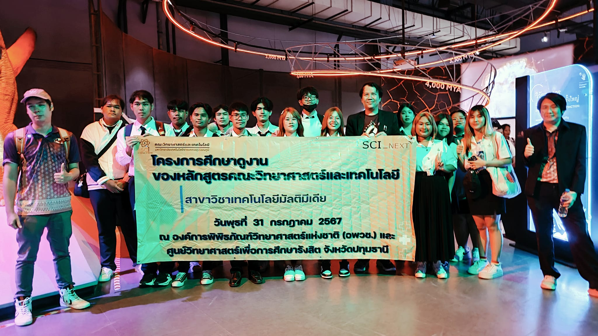
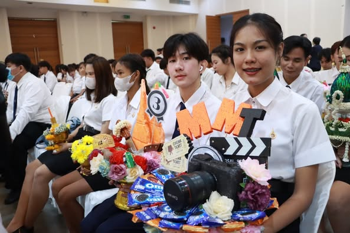

สาขามัลติมีเดีย
มหาวิทยาลัยเทคโนโลยีราชมงคลสุวรรณภูมิ
Facebook Website
เมื่อวันที่ 31 กรกฎาคม 2567 ดร.ณพงศ์ วรรณพิรุณ ประธานหลักสูตร ทล.บ. สาขาวิชาเทคโนโลยีมัลติมีเดีย พร้อมด้วยคณาจารย์ประจำหลักสูตร และนักศึกษาจากสาขาวิชาเทคโนโลยีมัลติมีเดีย ได้เข้าร่วมโครงการศึกษาดูงาน ณ พิพิธภัณฑ์พระรามเก้า องค์การพิพิธภัณฑ์วิทยาศาสตร์แห่งชาติ และศูนย์วิทยาศาสตร์เพื่อการศึกษารังสิต

วันที่ 31 กรกฎาคม 2567 หลักสูตรเทคโนโลยีมัลติมีเดีย พานักศึกษา ศึกษาดูงาน ณ พิพิธภัณฑ์พระรามเก้า องค์การพิพิธภัณฑ์วิทยาศาสตร์แห่งชาติ และ ศูนย์วิทยาศาสตร์เพื่อการศึกษารังสิต

นักศึกษาและคณาจารย์สาขาวิชาเทคโนโลยีมัลติมีเดีย เข้าร่วมพิธีไหว้ครู ประจำปีการศึกษา 2567 ณ หอประชุมพระพิรุณระลึกโปรดเกล้า มหาวิทยาลัยเทคโนโลยีราชมงคลสุวรรณภูมิ ศูนย์พระนครศรีอยุธยา หันตรา